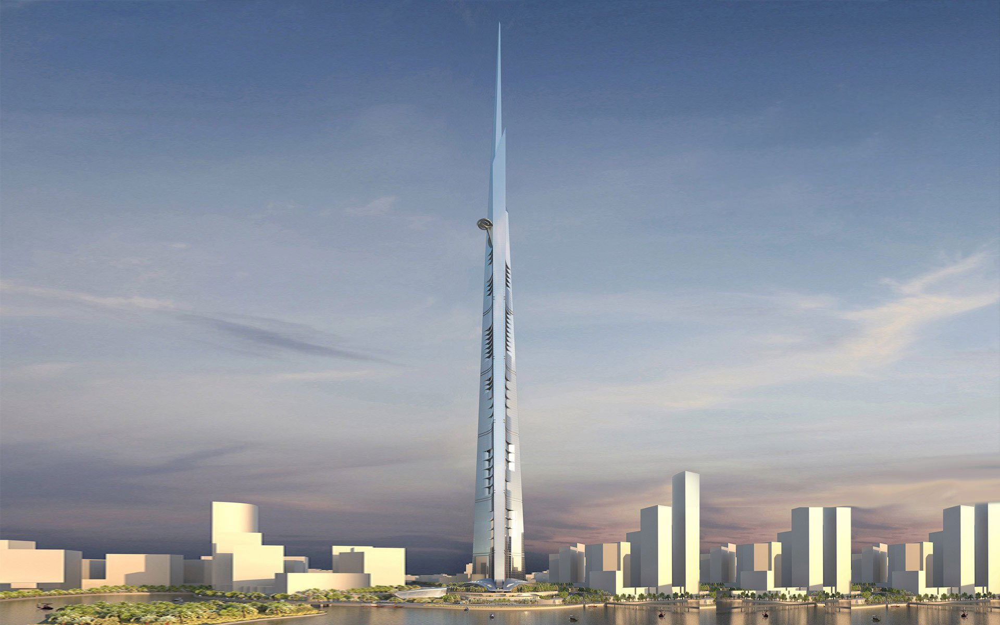
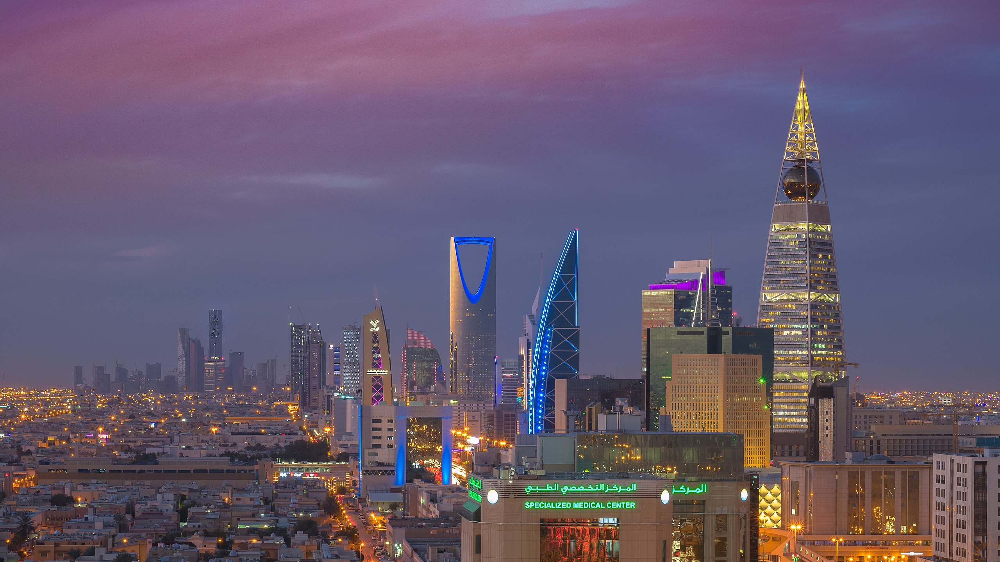

<div id="fixed-bg" class="fixed w-screen h-screen">
    
    <!--  -->
    <div class="h-full w-full absolute top-0 right-0 z-10"></div>
</div>

<style>
     #fixed-bg {
    /* background: #033 */
    /* transform: rotateY(180deg) */
    z-index: -1;
    /* background-color: #737; */
    background-color: #006c62;
  }
  #fixed-bg div {
    background: linear-gradient(transparent 20%, #000a);
    
    /* background: linear-gradient(300deg, #054 60%, #222 60%, #2222 60.3%, #2221 60.5%, transparent 60%) */
  }
  #fixed-bg img {
    /* -o-object-position: 20% 0%; */
    /* object-position: calc(50% - 30vw) 50%; */
    -webkit-transition: 0.1s;
    transition: 0.1s;
    /* transform: translateX(-25%); */
    filter: contrast(0.8) opacity(0.9) saturate(1.3);
  }
  @media (max-width: 640px) {
    #fixed-bg img {
        object-position: calc(50% - 30vw) 50%;
    }
  }

</style>